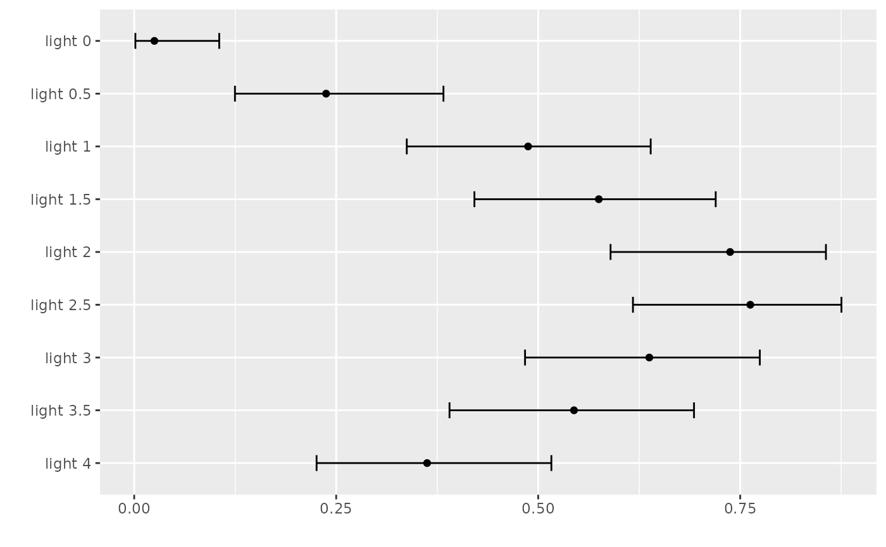

Inverse logit transformation of Confidence Intervals
expit.mcpCI.RdInverse logit transformation of confidence interval estimates in mcpCI objects.
Value
An object of class mcpCI with transformed estimates. The default method returns 1/(1 + exp(-x)).
See also
Other confidence interval transformations:
exp.mcpCI()
Examples
## proportion of green aphids at each light level
aphidlight$lightf <- factor(aphidlight$light)
fm <- glm(cbind(green, black) ~ lightf - 1, data = aphidlight,
family = binomial(link = "logit"))
## one contrast per light level: the logit of each group's proportion
CM <- diag(nlevels(aphidlight$lightf))
rownames(CM) <- paste("light", levels(aphidlight$lightf))
mc <- mcprofile(fm, CM)
(ci <- confint(mc))
#>
#> mcprofile - Confidence Intervals
#>
#> level: 0.95
#> adjustment: single-step
#>
#> Estimate lower upper
#> light 0 -3.664 -6.5301 -2.1403
#> light 0.5 -1.166 -1.9486 -0.4779
#> light 1 -0.050 -0.6752 0.5719
#> light 1.5 0.302 -0.3185 0.9428
#> light 2 1.033 0.3620 1.7831
#> light 2.5 1.166 0.4779 1.9486
#> light 3 0.565 -0.0652 1.2326
#> light 3.5 0.178 -0.4464 0.8134
#> light 4 -0.565 -1.2326 0.0652
#>
## simultaneous confidence intervals on the probability scale
(pci <- expit(ci))
#>
#> mcprofile - Confidence Intervals
#>
#> level: 0.95
#> adjustment: single-step
#>
#> Estimate lower upper
#> light 0 0.025 0.00146 0.105
#> light 0.5 0.237 0.12471 0.383
#> light 1 0.488 0.33734 0.639
#> light 1.5 0.575 0.42105 0.720
#> light 2 0.737 0.58953 0.856
#> light 2.5 0.763 0.61725 0.875
#> light 3 0.637 0.48370 0.774
#> light 3.5 0.544 0.39022 0.693
#> light 4 0.362 0.22573 0.516
#>
plot(pci)
